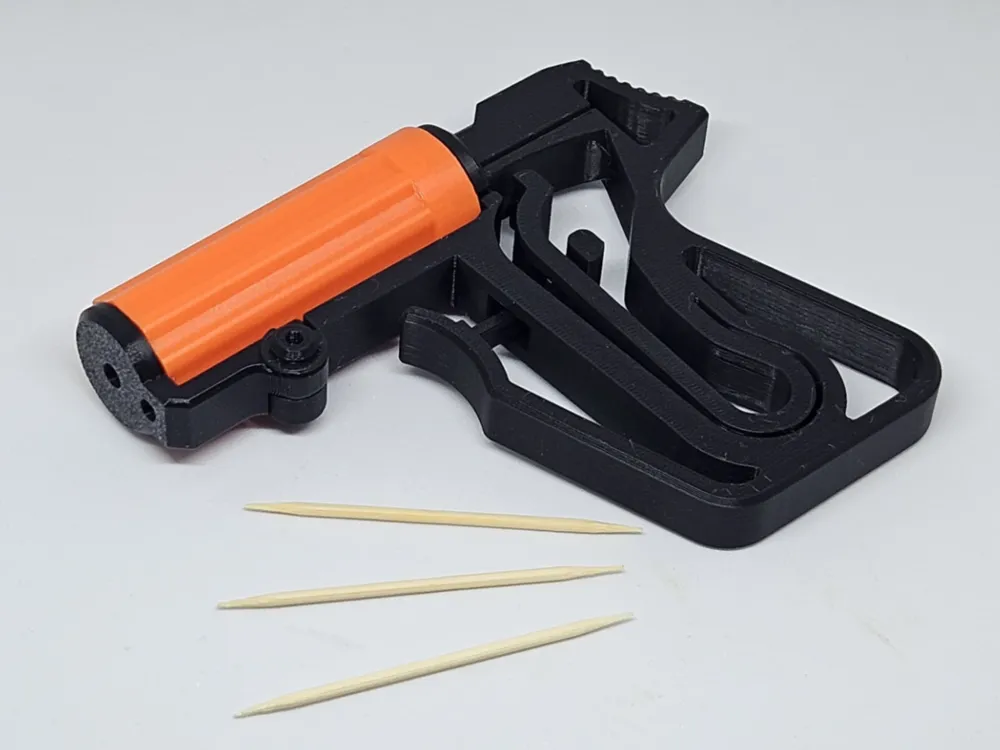

Toothpick Gun
Забавен и креативен 3D модел на малък Toothpick Gun, който изстрелва клечки за зъби! Подходящ е за експерименти с механизми, обучение и демонстрации на 3D принтирани сглобки.
Лек, безопасен и лесен за изработка – този проект е чудесен начин да научите повече за движението и взаимодействието между различни части.
⬅ Назад към 3D Модели